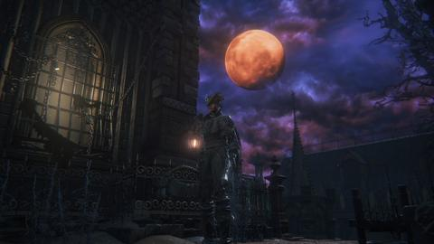
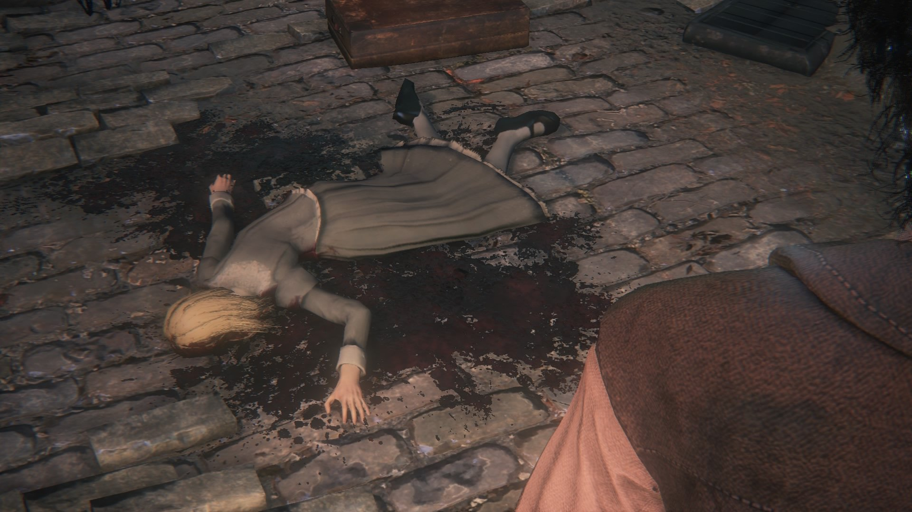

Young Yharnam Girl |
|
|---|---|
|  | |
| General Info | |
| Location | Drops |
| Central Yharnam | - |
Young Yharnam Girl is a non-player character in Bloodborne. You will meet two girls depending on your choices, they are both the daughters of Viola & Father Gascoigne
Location
This character can be found in Central Yharnam, behind a window. reached by going around the sewers and climbing back up a ladder past a Troll, she is next to a gate that returns you to the first Brick Troll you met. She asks that you find her mother, Viola, who has gone to look for Father Gascoigne.
- Related Item: She gives you the Tiny Music Box
Quest Progression
1. Return to her after defeating Father Gascoigne and picking up the Red Jeweled Brooch. It can be seen on the rooftop. Just go up the stairs and drop on the roof.
2. Choose whether to give her the Brooch or withhold it (withholding means use it for yourself, don't pick it up, or store it in the Hunter's Dream).
2a. If you give the Brooch to her she will no longer talk to you. Eventually she will leave her home. Defeating the pig in the sewers will yield a Red Messenger Ribbon.
2b. If you don't give her the Brooch, and have visited the Oedon Chapel about it being a safe haven, you can tell her to go there for safety. If you choose the Chapel the blood soaked ribbon will still appear on the pig.
3. Her Older Sister will appear in the window after you either gave the Brooch or told her about the Chapel, and have killed Rom the Vacuous Spider. She will ask you to find her younger sister who has a White Ribbon. Turn in the Red Messenger Ribbon.
3a. Walk away from her window and past the gate will trigger a dialog of the sister talking to herself.
4. Reload the area and go down the ladder from the window to find the White Messenger Ribbon.
Alternative options:
1a. If you have visited Iosefka after visited Oedon Chapel and been told about it being a Safe Haven you can direct her to Iosefka's Clinic. The next time you visit the clinic you will receive a Lead Elixir, but the red ribbon will not appear on the pig in the sewers, which also prevents you from getting the white ribbon. But if you now enter the clinic's back door, from the Forbidden Woods, the young girl can be found inside, transformed into a celestial being. She's the one walking back and forth in the main hallway, near the room with the Cainhurst Summons. If you kill her she will drop the Formless Oedon rune.
1b. You may also opt to never interact with her again any time after receiving the music box (or just never talking to her at all) and she will eventually disappear from the window on her own, causing a similar premature end as sending her to the clinic, but with no rewards.
Dialogue
First interaction with window:
Who... are you? I don't know your voice, but I know that smell... Are you a hunter? Then, please, will you look for my mum? Daddy never came back from the hunt, and she went to find him, but now she's gone, too... I'm all alone... and scared..."
- Find Girl's Mother: "Really? Oh, thank you! My m-mum wears a red jeweled brooch. It's so big and... and beautiful. You won't miss it. Oh, I mustn't forget. If you find my mum, give her this music box. [Receive Tiny Music Box] ... It plays one of daddy's favorite songs. And when daddy forgets us we play it for him so he remembers. Mum's so silly, running off without it!"
"My mum wears a red jeweled brooch. It's so big and beautiful. You won't miss it. Oh, and if you find her, give her this music box. Please, I know you can do it." - Refuse: "Oh, alright... Well th-thanks mister hunter, for talking, at least. Take care, on your hunt."
"Thanks for chatting. Please be careful out there!"- After reloading: "Are you that hunter? Can you look for my mum?"
After refusing to help:
If you refuse to help and talk to her after beating Vicar Amelia and triggering nightfall, she cries: "Mum, come home... I'm alone... I'm scared... It's not fair... "
After accepting quest to find her mother:
"Hello mister(miss) hunter. Still cant find my mum?"
- [If Brooch is in inventory]
- Give: "Miss Hunter... was it really her?...Mummy...mummy... Don't leave me alone..."
- Do Not Give:
"Yes, okay. I can wait. Mum knows I'm very brave, and you're very kind. I'll be a good girl. I promise" - No:
"Oh, okay. But isn't there something I can do? Maybe mum and dad are stuck out there, waiting for me to come to them. What do you think, mister(miss) hunter?"- Tell of Oedon Chapel: "Yes okay, thank you very much mister hunter! I love you almost as much as mum and dad, and grandad!"
- Tell of Iosefka's Clinic:
- Withhold Information: "Yes, i see... I can wait, I won't be afraid. I know, I do. The morning always comes."
After directing her to safety, and picking up the ribbon:
(From this point on, it's the Little Yharnam Girl's older sister speaking)"Oh, you haven't by chance... seen my little sister, have you? I told her to look after the house, but she's run off somewhere. She's still quite small, and wears a big white ribbon. Have you seen her out there anywhere?"
- Give Red Messenger Ribbon: "Oh, how did this happen... Why would she ever go outside? At least... I'll have something to remember her by.
- Do Not Give: "Oh, okay then. But if you do see her, would you give me word? She's a small girl, with a big white ribbon. My dear little sister..."
- After not giving Ribbon and talking again: "Oh, back again? Any news of my sister?"
Later heard outside while near window, but without interacting with it:
"What a perfect ribbon, and now it's mine. I can't wait to try it on."
Interacting with the window at this point:
"Oh, it's wonderful..."
Gallery

Other Notes
- If you progress too far in the story before completing the quest, it becomes impossible to complete as checking the window will yield "[No Response]" like many other windows and doors around Central Yharnam.
- A rumor states that the Yharnam Girl can reach the Cathedral Ward if the player avoids picking up her mother's brooch. This has been tested proven false.
- To initiate this quest, seems like she must be talked to before advancing the night (Killing Vicar Amelia), else she'll say a generic line of where her mother is, followed by "No Response" if you go away and come back.
- If she hasn't give you the Tiny Music Box yet, you can hear it playing when you are in the area nearby her window.
- The White Messenger Ribbon is actually the very same ribbon as the Red Messenger Ribbon, the older sister only washed off the blood, which is why you can't hold both ribbons at the same time.
- For Cannon users, it is highly recommended to send the little girl to Iosefka's Clinic due to the Formless Oedon rune, by stacking all three runes, one can fire the Cannon for up to 4 times.
- Even if you withhold information from the little girl she (presumably) still dies. If you kill the boar in the sewage tunnel after reloading the game you will find the Red Messenger Ribbon. It is speculated that she tried to run away from home after hearing her parents were both killed.
- It is possible that the older girl is not in fact Gascoigne's daughter, as the younger girl never mentions her and the older girl hesitates before asking if you've seen "[her] little sister". The older girl seems much more concerned about acquiring the younger girl's ribbon than her well being as well.
 Anonymous
AnonymousI forgot to talk to the Little Girl & didn’t direct her to safety. I had defeated Rom, returned to Yharnam before the Blood Moon cutscene, reloaded the game after hearing her talk (she said “Mother, please come home. I’m all alone, I’m scared. It’s not fair…”), and found that the Little Girl wasn’t home; I checked the sewers hoping that she was eaten by the boar in the sewers, yet she wasn’t there. Is there something I’m missing? Did she commit suicide in her own home?
- Anonymous
Q_Q better to let them stay inside so someone can take care of them in the morning </3
- Anonymous
you two can stay inside for now my hunting dogs aren't hungry let
- Anonymous
- Anonymous
why is there so much bad information and shitty theories on fextralife?
- Anonymous
- Anonymous
Isn't the first alternate decision just as relevant as 2 and 2b? Why isn't it listed as 2c?
- Anonymous
I leave them alone entirely, I'll just adopt the two in the morning.
- Anonymous
I think I missed the older sister, I did the entire path for the girl in the window, got her music box, sent her to catheral ward, found her red messenger ribbon, but after coming back from killing rom, I went back to the window and patches the spider was there and gave me the tonsil stone with no sight of the older sister, did I miss her?
- Anonymous
I really wish the young girl didn't die. I wish there was an option to say that you will take care of her after her parents die.
- Anonymous
I killed the pig before talk I g to her lol but it obviously respawns so that isn't relevant. Some people are saying you have to wait for the blood moon but idk what that means because I killed Gascoigne and gave her the brooch before blood moon
- Anonymous
so apparently if you get to the point where you get the tonsil stone and you havent sent the young girl to the clinic or the temple, or gave the brooch, then all you get is a man speaking. i just got the tonsil stone from the location where gilbert usually is and when i went to the young girl the same voice is coming out and i cant speak to the little girl. this story line is locked for me i guess. figured i'd give a warning to people, dont wait.
- Anonymous
The voice isn't saying "so call out to your sister." Its the brick troll saying "so cold, dear sister"(Vicar Amelia).
- Anonymous
I can safely say that you can have BOTH ribbons in your inventory at the same time. Right after I spoke to the older sister I went down and killed the pig. It dropped the Red Messenger Ribbon. After that, I went to the Hunter’s Dream and then teleported back to Yharnam. I went down the ladder and picked up the White Messenger Ribbon. Now I have both.
- Anonymous
"After turning in the Brooch, idling outside the window for several moments will elicit the whispers of a man, saying "So, call out to your sister...". Not exactly true. The phrase is "So cold, dear sister" and is spoken from time to time by the brick trolls around Yharnam. In this particular case, by the troll down the ladder from the girl's location. And he does that regardless of the girls quest.
- Anonymous
Think of it like this ... you complete the full quest, every family member dies and reunites in the afterlife to be together for eternity!
- Anonymous
I choose to believe she escaped the pig into a small crevice or alleyway just barely avoiding her head getting bitten off by the pig, but the pig did snag her bow in the attempt. She spends the rest of the night hiding.
- Anonymous
- Anonymous
The best solution is to honestly just not give her what she asks for. She's a kid, she shouldn't go out at all during the hunt for any reason. Nor be given a reason to. And unlike most NPC's, her sister seems rather unaffected by the Blood Moon appearing, so it's not like anything bad will happen to either of them. Sometimes the best moral decision is to simply do nothing at all.
- Anonymous
There is apprently rumors and "supposed" cut content where the girl actually does make it to th chapel and was another way to get the Formless Oedon rune and dialog where she says along the lines of how she sees you like her dad was, a brave and fearless hunter to those you care about. which honestly they cut it because a child model was probably too much for some reason, but i'd of loved to of seen this content (that is if the rumors are true on this being cut content) but she'd still of died like most the other NPCs when they deal with the bloodmoon.
- Anonymous
- Anonymous
If you talk to her, it shows that in a world of chaotic blood lust that there is still empathy, residing in at least one hunter. If you avoid her, you're still ridding the areas of blood thirsty beasts being her silent guardian. Either way the "gods" are still watching a selfless act coming from a killer. Either way, the hunter would fight to save at least one little girl.
- Anonymous
There is a man speaking instead he says to go to the ancient shrouded church hidden to the right of the main cathedral and that the god head will grant me strength.
- Anonymous
Hey btw the dialogue section on this wiki is incomplete, if you accept her quest then come back after advancing the night she says the following: "Mum, come home..." "I'm alone...I'm scared" "It's not fair..."
- Anonymous
Why does this article say the player kills both parents? At what point in the game does the player kill Viola?
- Anonymous
Hey you shouldn't use a picture of the blood moon for this article. Since people most likely will see or at least start this quest before it happens. You're spoiling for no reason
- Anonymous
Every time i stand in front of that window i realize how *****ing much i hate that Pig and punch the living***** out of it with my magical Boxinggloves called Kosparasite. -Leotox
If you don't want them dead, don't start the questline. Not even one dialogue line. Avoid that window like a Winter Lantern. It's the only "solution" that doesn't give the pig a blood ribbon at any point in the game or turn her into a celestial. What happens then is anyone's guess, but headcanon is way preferable to any of the alternatives.
- Anonymous
"Even if you withhold information she (presumably) still dies". HEY ***** YOU MAN, stop *****ing with my head cannon you bastard
- Anonymous
It's very unlikely Henryk is related by blood to either Gascoigne or his wife. Henryk is black, whereas Viola, Gascoigne and the presumable older daughter are white. (You never see the little girl from the beginning, but considering her family she must be white as well. )
- Anonymous
i tried to save the girl but couldn't maybe using the red jeweled brooch on the altar of despair and her mum revived and everyone was happy . maybe using the red messenger ribbon will have a similar effect?
- Anonymous
The voice talking about the sister is definitely the troll at the bottom of the ladder, if he's dead the line doesn't play, and it gets louder if you sneak up to him.
- Anonymous
This quest destroys me. They make you feel as if you can't really save anyone in this game
- Anonymous
If you have the red ribbon on the messengers, when you give it to her, you don't lose it.
- Anonymous
I was thinking If I kill the giant pig and (just to be sure) the brick troll, and then talk to the girl whiteout reloading the area, could be possible for her to reach the Chapel?
- Anonymous
In the dialogue section it says that idling after turning in the brooch causes a man's voice to say "so call out to your sister" but that's not true. That actually comes from the brick troll at the bottom of the ladder, because they occasionally whisper "it's so cold... dear sister". I think whoever put that in made a mistake
- Anonymous
I killed wet nurse and went back to the house where the little girl was. I’ve completed her entire quest line so the house was empty. As soon as I approached the area i heard the tune of the music box/Mergo’s lullaby. Has someone experienced this too?
- Anonymous
I think they could’ve done better with this character. It would be more interesting if she could make it to Oedon Chapel where you could converse and learn more about Yharnam’s history or Gascoigne.
- Anonymous
Don't bring the broach back to the daughter. Bring her the Yharnam Stone that you get from the Chalice Dungeon. If you use the broach and make it into a gem, then kill the blood queen for the Yharnam Stone, bring that back to the daughter and she'll give you the "Yharnam Haze" which can then be applied to whatever weapon of your choice. This will transform whatever weapon you choose into a lightsaber-type weapon. This is extremely useful for going into the DLC because the Yharnam Haze weapon will pretty much mow down anything.
- Anonymous
I don't know how or why, but now after I killed Rom the retarded spider instead of the older sister there speaks a guy that can be normally spoken through a door in old yharnam. He says something about going right at the church where you fight Amelia Vicar (I think that was her name). Any clue why's that or does anyone have that happen to them before?
- Anonymous
It is not a man who's whispering, it's the Brick Troll down the Ladder. Actually all the Brick Trolls say this "Oh so cold, dear sister...", or whatever thing. Not just this one.
- Anonymous
"...after hearing both of her parents were killed by you". Umm... what? I remember only killing only Gascoigne, not Viola.
- Anonymous
I haven't seen it mentioned so I'm gonna mention it. You can keep both ribbons if you equip the red ribbon to your messengers and then give it to her. She gives you the white ribbon, and you keep the red one since it's currently equipped.
- Anonymous
Probably the best outcome for this quest would be a result of the hunter not even getting involved.
- Anonymous
The little girl is not the celestial being in the clinic; its there regardless of her status.
- Anonymous
Ok, so seeing a comment here saying that the girl goes to the clinic after the blood moon. Well... I tested this and this is wrong. I can't see her anywhere and I haven't talked to her on that character. So, if you don't talk to her, that's the best thing to do.
- Anonymous
Its easy to see why devs made the quest this way. If the child went to the OC the player would b able to kill her. And that is taboo in games
- Anonymous
I got the music box but forgot to return to her before beating Vicar. Now I get the "its not fair" dialogue even with the music box in inventory. Did I ruin the questline?
- Anonymous
I was hoping for her to show up in the chapel so the suspicious beggar can eat her :(
- Anonymous
So, going through the comments it's evident that every single option when interacting with the girls leads to the same result - the older one killing herself and the other serving as dinner. Just for the sake of exhausting all possibilities, what happens if you don't even start a conversation with the girl in the first two moon phases? No one to my knowledge wrote about it.
Also, the "So cold, dear sister." line is absolutely unrelated to the girls. I clearly heard the troll that sends the flaming ball rolling down the Yharnam bridge say it.
- Anonymous
Wtf, is that really how it ends? A greedy sounding older sister going "yay, I got the ribbon, who cares that my little sister is dead"? damn it, bloodborn... tug at my heart strings then snip them with a pair of rust scissors. -Dakuu75
- Anonymous
Wait, then she has to kill her father, right? Using the music box he gave her as a little girl...
- Anonymous
"So it is speculated that she tried to run away from home after hearing her parents were both killed by you."
Oh really, I didn't know O killed her mum
"It is possible that the older girl is not in fact Gascoigne's daughter, as the younger girl never mentions her and the older girl hesitates before asking if you've seen "[her] little sister". The older girl seems much more concerned about acquiring the younger girl's ribbon than her well being as well. Additionally the voice heard talking about the sister may just be the troll at the bottom of the ladder."
Who the ***** wrote this*****? Fire them immediately
- Anonymous
why did I get the red ribbon before I even talked to the little girl then?
- Anonymous
Ok, so I talked to her after beating Amelia. She disappeared after that. Then I went to the pig..... Yields no red ribbon. I checked the ward but she's not there either. I am gonna try inside the clinic next.
If she isn't there, maybe I found a way to spare her of the pig?
- Anonymous
In my opinion this quest has three endings. Either letting her get killed by the pig and letting her sister die from suicide, sending her to the clinic (Which the drop is actually from Adella the nun, so might not be her) or... not letting her to either the chapel or the clinic, and hopefully she sleeps during the night, for the windows aren't broken and no signs she would turn to a beast.
And, I do wonder if there is more dialogue from her hidden in the unused files.
- Anonymous
This was a sad fate for the young girls, ‘‘tis why I like this game very much, no happy endings and very dark consequences for some characters.
- Anonymous
Soulsborne games never have been known for uplifting NPC stories, but this one really broke my heart. So much so I made a character as young as I could named "Amelia Gascoigne" just so in my own head cannon she survives that horrible night and becomes a hunter.
- Anonymous
lmao this is wrong. only Gascoigne was killed by the PC. Viola was probably killed by Gascoigne.
- Anonymous
Responding to the reply I got from Anonymous. What happens, let's say, she somehow survived the pig. she would be at the places of death for both her mother and father, and possibly grandpa (the Henryk theory), so.... I doubt she would go back to the pig, but wouldn't go to the chapel, but who knows.
Another theory I have is that the Night of the Hunt is a "shared" nightmare, where everyone dreams it at the same time, and if you die you wake up. So if THIS is true, like both the guy at the beginning and the ending scene (execution) states, then maybe they are all alive and well?
I hope either one of the theories are true...
- Anonymous
I'm not so sure the girl dies. The red ribbon states that it was from the organs of some victim. It doesn't say if it was the girl or not. Again, my theory was that the pig grabbed her ribbon and ripped it off. And if that were the case she could have survived.
- Anonymous
The fact that she drops the oeden rune if you send her to iosefkas clinic is wrong. it's not the little girl dropping the rune, it's instead the nun who drops it. she also drops it if you kill her in oedon chapple. the little girl gets eaten by the pig instead
- Anonymous
Just getting around to playing this game. I'm curious, has anyone tried killing the pig first then going and talking to the little girl? Does this change the outcome at all for the Chapel option? Seems odd she would show up as a celestial being in the clinic and not at the chapel if you cleared a path.
- Anonymous
Hey apparently you can hear her say some things that prove that the "elder sister" isn't related to the little girl
- Anonymous
I cant see it on this page but if you dont have the broche (i used it up) and you talk to her during the night she says "Mum come home... I'm alone...I'm scared ...It's not fair..." Didnt see this dialog on the page so i just thought i would share it.
- Anonymous
"Even if you withhold information from the little girl she (presumably) still dies. If you kill the boar in the sewage tunnel after reloading the game you will find the Red Messenger Ribbon."
I just tested this and it seems false, or at least it might've been patched out. Witheld information, came back to see the "no response" message and killed the pig. No ribbon. Went back to the Hunter's dream and killed the pig again. No ribbon. Went back to the Hunter's dream, reloaded the game, killed the pig again
No ribbon.
P.s.: In my headcanon, the sister came back and they just went to sleep.
- Anonymous
Is it possible that the dialogue "Call out to your sister" is the brick troll's secret dialogue of "So cold, dear sister"?
- Anonymous
After i found the red ribbon by the pig, she said her sister left, then i found her dead by the big creature with a white ribbon but had already given her the red one, is there a way to give her the white one? also if she died by the pig why is she in there and her sister dead near by?
- Anonymous
I'm going to leave a suggestion on how there may be a chance the girl could live. I hope someone tries it, I'm still very early in the game so it's going to take me a while to get back to this part because I have already messed up. Simple, talk to her and get the music box. Go fight her father and use the music box during the fight near him, near him when he's in his second form and lastly near the mothers body, make it to the chapel and do not pick up the brooch. Talk to the chapel NPC and head back to to her window killing everything in that area, everyone accept for one enemy. That one enemy being the big guy with the big club that stands down the ladder beneath her window. The same guy that whispers ("So cold, dear sister...") and ("It's all your fault!"). Something tells me that he might actually help the little girl get to the chapel. He might also be the man's voice you hear if you stand idle by the window who says something along the lines of "so call out to your sister". If this fails there is only one other thing I recommend be done differently and that's to kill the chapel npc before you send her there. You never know, he might eat her or something, we never particularly figured out why he seems sketchy at the end of his speech. Good hunting.
- Anonymous
i actually was able to progress the quest up to the point oftelling her her mom died, but ithe pig nevr dropped anything and her crying was the last dialogue of that window, i picked up the carillon right after killing gascoigne and the brooch after killing henryk, which i killed after amelia iirc.
- Anonymous
So do the brick trolls change what they say after you meet the sister? It always sounded to me like they say "so cold" but in a recent playthrough I noticed after I returned to see the sister that they all seem to say "so cold, dear sister" and I sort of figured it is in some way related to the young Yharnam girl and her "sister"
- Anonymous
I know these games never have happy endings, but this is the only one that truly got to me. I doubt I'll ever get over it. May the good blood guide your way child.
- Anonymous
That's not her older sister. Its a neighbor that lives below her. She dies falling of the ladder going back home. The young yharnam girl says she loves u almost as much as her mm dad and granddad. She doesn't mention a sister. And after giving the older sister the red ribbon she says she always wanted the ribbon and she cant wait to try it.
- Anonymous
How do you sent her to Iosefkas clinic? I never get the dialogue option
- Anonymous
Anyone know what this could be about? I haven't heard it since I didn't turn the brooch in but I'm really curious about this guy being in her house and what could possibly be going on.
- Anonymous
After going back to the area in the last moon phase, I gave the older sister the Red messenger ribbon, listened to her response, and waited around to hear her "secret" monologue outside the window. Just for advice, if you don't hear anything a moment or two thereafter, go around to the front door. That activated it for me.
- Anonymous
I've always found it upsetting that you seemingly can't really save her at all. Just bums me out, you know? I over empathize with characters in almost every story I read or watch or play so when something bad happens to them, it really hits me hard.
- Anonymous
I am new to the souls series, and to be honest this game is killing me. I have killed the first 4 bosses but apparently never found "oedens chapel" to send people there for safety. I have been lookin on the web and in game for hours now.... apparently EVERYONE except me knows its location somehow.. but I don't.. im so close to just giving up, I cant take much more... no one on the internet has asked the same question so I feel like a real moron lol
- Anonymous
As far as I know, Viola is acutally the mother and not the girl herself.
- Anonymous
Did anyone find the little girl's sister? the girl that gave you the music box before Gascoigne (she goes away and her sister comes back and ask you to find it but i never found her). She also says she's a little girl with a white ribbon.
- Anonymous
And I never picked up the brooch. But she's not there and hasn't been for a while. What went wrong?
- Anonymous
The tiny music box says it belongs to a mother and father. The father is Father G, the mother is listed as "Viola". We don't know what the little girl's name is, but Viola probably isn't it.
- Anonymous
I've not seen anyone ever say Viola's daughter gets to the Chapel safely, and at least one person has confirmed still encountering the Older Sister in the window and progressing her with the ribbons even after sending Viola's daughter to the Chapel. Can anyone actually confirm further interaction with Viola's daughter at some later point in the game if you send her to the Chapel? If not, it seems her quest only has one ending.
- Anonymous
After giving the little sister the Ribbon, waiting in the area reveals additional Dialog. Has anyone tried waiting after giving the little girl her mothers brooch? Maybe that would also reveal hidden dialog that could help save her.
- Anonymous
Any thoughts on this? Since the ribbon is a "messenger" ribbon and only one wears it?
- Anonymous
i picked up the brooch didnt give it to her, withheld info on the cathedral. after killing vicar she starts to say "mum... where are you.. im scared". at this point you can still give her the brooch, but you cant send her to the cathedral. i wonder if i should wait and see what happens.
- Anonymous
What about this grandad she mentions "I love you almost as much as mom and dad, and grandad!"? Maybe he is the missing piece to save her...
- Anonymous
Since both sending the girl to the chapel or giving her the brooch leads to the same quest progression, is it better to just use the brooch for yourself to get the blood gem than giving it to her?
- Anonymous
I somehow completely missed her side-quest, but when I went back to the Central Yharnam lamp after defeating Rom, the bars on her windows were torn outward, and there was an enemy standing near it. Killing it dropped a more powerful "Clawmark" rune (20%).
- Anonymous
I came back to the window after killing Rom expecting her sister and heard a man's voice, as far as i know this isn't on the wiki, But he tells you to find the "Ancient shrouded church". I didnt get a name but his voice actor sounds very familiar too.
- Anonymous
I totally forgot about her and killed Bloodstarved Beast, and Emelia. The window isn't lit up anymore and when I went to kill the pig, I just got the messenger red ribbon. So, I screwed up her quest line?
- Anonymous
- Anonymous
After picking up the ribbon, you can talk to the little girl's older sister when you return to the window (unless perhaps you progressed too far in the story before doing so, in which case it may say [No Response] like it does with many other windows in Yharnam later in the game). You can give her the Red Messenger Ribbon, making her upset about her sister's death. If you do so and return later, you'll notice she'll have started going crazy, talking about how beautiful the ribbon is and how happy she is to have it. If you then return later once again, you can find her dead at the foot of the ladder next to the window, and pick up the White Messenger Ribbon.
- Anonymous
The suspicious "older sister" might not be who she say she is. For one, the musicbox girl never mentioned anything about siblings, and she pretty much lists off all of her family member including a grandad who we know nothing about yet. Also, I think the older sister is the girl who was in the house below the musicbox girl, and if so why is she in a separate house so close to her "sister"? I think the "older sister" is someone who wanted the musicbox girl killed or coveting the ribbon. Not sure what is so "wonderful" about the musicbox girl being dead, but she was pleased to have the bloody ribbon for sure. She is clearly insane, and I think she went in to the musicbox girl's house to look for the ribbon or something, met the hunter and lied to our faces about her being the sister.
- Anonymous
After picking up the ribbon, you can talk to the little girl's older sister when you return to the window (unless perhaps you progressed too far in the story before doing so, in which case it may say [No Response] like it does with many other windows in Yharnam later in the game). You can give her the Red Messenger Ribbon, making her upset about her sister's death. If you do so and return later, you'll notice she'll have started going crazy, talking about how beautiful the ribbon is and how happy she is to have it. If you then return later once again, you can find her dead at the foot of the ladder next to the window, and pick up the White Messenger Ribbon.
- Anonymous
I killed the guy in the chapel (Im the worse D:) and i use the brooch,what can I do?
- Anonymous
Notice that the music box is the same track as the music for Mergo's Wet Nurse boss? Is the boss trying to psyche the player out by reminding them of their failure to save Viola's daughter or something else? Thoughts?
- Anonymous
During the second moon phase, I decided to go and talk to her and all she says is "Mum, come home...I'm alone...I'm scared...It's not fair" and then I have the option to give, or not, the red jewelled brooch.
- Anonymous
After player defeating Father Gascoigne, do not pick up her mother red jeweled brooch from viola dead body, never.. just until you return to tell her still cant find her mum and then let her know about the Oedon Chapel of safe haven! (Because, if you picked up the brooch & process the dialog to not letting her know that you didnt find her mum die on the roof and about brooch [That's a good lier!! and plus+ greedy as well wanna to having it the Blood Gem Stone for your next adventure] in this case will make her die, eaten by the giant sewer pig while she passing by the sewer to Oedon Chapel)
Bloodborne is the most messed up of all the fromsoft stories.
Nobody has a happy ending in it. Literally nobody, even your own player character has endings where he satisfies the great ones desires or dies.
Damn.
8
+10
-1